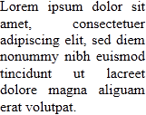
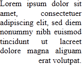
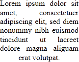
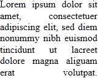

text-align-last
Задаёт выравнивание последней строки текста, когда свойство text-align установлено как justify.
Краткая информация
| Значение по умолчанию | start |
|---|---|
| Наследуется | Да |
| Применяется | К блочным элементам |
Синтаксис
text-align-last: start | end | left | right | center | justifyЗначения
- start
- Строка выравнивается по начальному краю блока.
- end
- Строка выравнивается по конечному краю блока.
- left
- Строка выравнивается по левому краю.
- right
- Строка выравнивается по правому краю.
- center
- Строка выравнивается по центру.
- justify
- Строка выравнивается по ширине. Если в последней строке только одно слово, то оно будет выравнено по левому краю.
Влияние разных значений на положение текста показано в табл. 1.
| Значение | Выравнивание | Вид текста |
|---|---|---|
| left | По левому краю |  |
| right | По правому краю |  |
| center | По центру |  |
| justify | По ширине |  |
Пример
<!DOCTYPE html>
<html>
<head>
<meta charset="utf-8">
<title>text-align-last</title>
<style>
div {
width: 300px;
text-align: justify;
text-align-last: justify;
}
</style>
</head>
<body>
<div>
При переходе через горы опирайся на долину;
располагайся на высотах, смотря, где солнечная сторона. При
бое с противником, находящимся на возвышенности, не иди
прямо вверх. Таково расположение войска в горах.
</div>
</body>
</html>Объектная модель
Объект.style.textAlignLast
Примечание
Internet Explorer не поддерживает значения start и end.
Firefox поддерживает только свойство с префиксом -moz-text-align-last.
Спецификация
| Спецификация | Статус |
|---|---|
| CSS Text Level 3 | Рабочий проект |
Браузеры
| Internet Explorer | Chrome | Opera | Safari | Firefox |
| 5.5 | 35 | 12 |
| Android | Firefox Mobile | Opera Mobile | Safari Mobile |
| 12 |